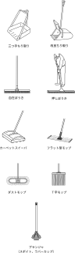

2024年
問題148 ビルクリーニング用器具に関する次の記述のうち最も不適当なものはどれか．
（1）凹凸のある床面は，研磨粒子が付着したパッドを床磨き機に装着して洗浄する．
（2）不織布繊維タイプのダストモップは，不織布の繊維の間にほこりを取り込んで除去するため使い捨てが一般的である．
（3）自在ぼうきは，馬毛などを植えた薄いブラシであり，ほこりを舞い上げることが少ない．
（4）改良ちり取り（文化ちり取り）は，移動する際にごみがこぼれないので，拾い掃き用に適している．
（5）床維持剤塗布用のフラット型モップは，房が短いため，壁面や幅木を汚しにくい．
2024年
問題148 正解（1） 頻出度AAA
凹凸のある床面では，ブラシを用いる．平らな面で用いるパッドでは清掃が斑になってしまう．
床磨き機について
床磨き機のサイズは，凸凹のある床面で使用するブラシ又は平らな床面で使用するパッドの直径で区別している．使用するブラシは直径20～50cmで，シダの茎又はナイロン繊維を植え付けたものが普通であるが，ワイヤブラシを用いる場合もある．一般に使用されているものは，1ブラシ式であるが，2ブラシ又は3ブラシのものもある．
床磨き機（ポリシャー，スクラバマシン（2024-148-1図，2024-148-2図参照）は，熟練を要するが前後左右に移動しながら床の洗浄ができる．電源は交流式が一般的である．
2024-148-1図 床磨き機
2024-148-2図 洗剤供給式床磨き機
出典 公益財団法人 日本建築衛生管理教育センター
「新建築物の環境衛生管理第1版第1刷」下巻55頁 図7-4-1(6)
出典 公益財団法人 日本建築衛生管理教育センター
「新建築物の環境衛生管理第1版第1刷」下巻55頁 図7-4-1(7)
回転数は高速床磨き機が毎分150～300回転である．超高速バフ機と称する毎分1,000～3,000回転の超高速機が弾性床のドライメンテナンス用に用いられている．
洗剤供給式の床磨き機（タンク式スクラバマシン）は，洗剤塗布作業を省くことができる．
平らな床面に用いるパッド（化繊性パッド）は化繊製フェルト状の不織布に研磨粒子を付着させたもので，用途によって各種硬度のものがあり，色分けによって，区別されている．
床用パッドの色と用途は2024-148-1表参照．
2024-148-1表 床用パッドの色と用途
| 粗さ | 色 | 主な用途 |
| 1 | 黒 | 樹脂被膜の剥離 |
| 2 | 茶 | 樹脂被膜の剥離 |
| 3 | 緑 | 一般床洗浄 |
| 4 | 青 | 表面洗浄 |
| 5 | 赤 | スプレーバフ |
| 6 | 白 | つや出し磨き |
-(3) ，-(4) ，-(5) 自在ぼうきなど清掃用具については2024-148-2表，2024-148-3図参照．
2024-148-2表 出題された清掃用具
| 場所・用途 | 清掃用具 |
| ソファの除じん | 小ほうき |
| 弾性床の除じん | 押しぼうき（フロアブラシ），乾式モップ（ダストモップ），手動スイーパ，フラット型モップ |
| カーペット表面の除じん | カーペットスイーパ（手動） |
| 石材床面のこすり洗い | デッキブラシ |
| 玄関ホールの水拭き | T字モップ（脱着式モップ） |
| 床維持剤塗布 | フラット型モップ（房が短いため，壁面や幅木を汚しにくい． |
| 床面洗浄の汚水回収 | 床用スクイジー |
| 階段の除じん | 自在ぼうき（ほこりを舞い上げることが少ない） |
| トイレ | ゴム手，白パッド（洗面器用），プランジャ |
| 建物周囲のごみ取り | 三つ手ちり取り（金属製で堅牢．多量のごみを扱うのに適する．）
改良ちり取り（移動の際にごみがこぼれない） |
| ガラス（ガラス窓，ガラス扉） | スクイジー |
| ガレージ，屋外通路 | 路面スイーパ |
